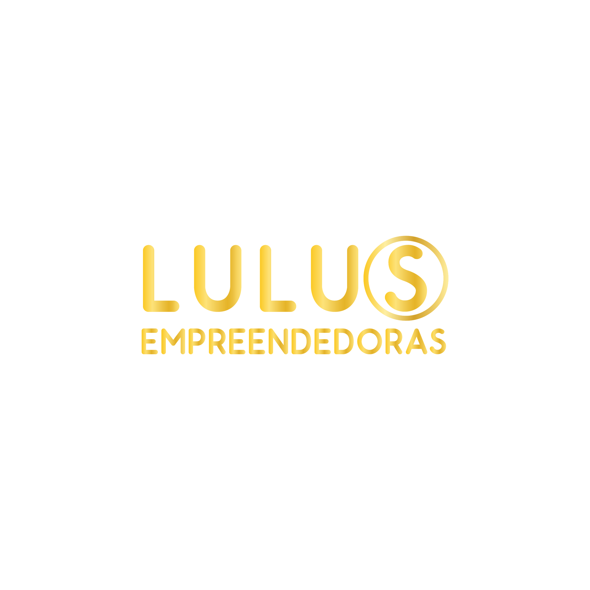

Lulus Empreendedoras é muito mais que uma marca registrada, é um movimento de educação, estratégia de posicionamento e autoconhecimento para mulheres que escolhem viver junto a uma comunidade de empreendedorismo digital que promove valores como liberdade de escolha, prosperidade, fé, justiça social e verdade.
A cada decisão consciente, uma mulher se aproxima da sua independência financeira, do reconhecimento profissional pela força do seu legado e do propósito de vida que deseja construir de geração em geração.
Aqui, decisão não é peso – é potência. É o ponto de partida para negócios que transformam realidades e vidas, marcas fortes que nascem da essência feminina e histórias que inspiram outras mulheres a serem livres, prósperas e felizes.
A LULUS nasceu para dar luz às ideias, sonhos e negócios de mulheres empreendedoras, unindo autoconhecimento, estratégia, espiritualidade e educação.
A história começa com a Lamparina do Sucesso, um projeto que acendeu a primeira chama: lives, mentorias, encontros, conexões e muita coragem. Em 2021, essa luz ganhou estrutura: branding, parcerias internacionais, cursos, design sprint, networking e planejamento para 5, 10, 20, 30 e 40 anos.
Hoje, a LULUS Empreendedoras é mais que uma marca. É um movimento, uma comunidade e uma casa para mulheres que querem empreender com propósito, estratégia e alma.
Razão social: ANDIARA COSSETIN TECNOLOGIA DA INFORMACAO LTDA
Nome fantasia: LULUS Empreendedoras · Lamparina do Sucesso Nursing Empowerment
Cidade/UF: Porto Alegre – RS
Uma trajetória construída com estratégia, fé, estudo, parcerias e muita tomada de decisão.
Lives, mentorias, primeiros conteúdos e as primeiras mulheres dizendo “sim” para seus sonhos.
Branding, parcerias Canadá–Brasil, cursos, design sprint, networking, certificações e plano de ação.
Comunidade, expansão digital, fortalecimento da marca e aprofundamento dos programas de educação.
LULUS como referência em empreendedorismo feminino, conectando mulheres, negócios e histórias.
A LULUS foi pensada para durar. O plano de ação inclui projetos para os próximos 5, 10, 20, 30 e 40 anos. Isso significa que cada decisão tomada hoje constrói um legado para as próximas gerações de mulheres.
“A tomada de decisão é a potência feminina” não é apenas um slogan – é a base de tudo. É o convite para que cada mulher assuma o protagonismo da própria história, com coragem, clareza e suporte.
Educação premium para mulheres que querem transformar conhecimento em renda, impacto e liberdade.
Acompanhamento em grupo ou individual para alinhar autoconhecimento, estratégia, finanças, branding, espiritualidade e rotina. Foco em tomada de decisão consciente e negócios sustentáveis.
Programa online baseado em empreendedorismo feminino, plano de negócios, comunicação estratégica e lançamentos digitais. Para mulheres que querem viver do próprio negócio.
Palestras para mulheres, consultorias em branding, posicionamento, plano de ação, estruturação de negócios com propósito e autoridade.
Uma comunidade de mulheres que florescem juntas, conectando histórias, negócios, fé e propósito.
O Movimento LULUS é um espaço seguro, acolhedor e estratégico para mulheres que querem empreender sem abrir mão da própria essência. Aqui, negócios caminham junto com espiritualidade, família, qualidade de vida e bem-estar.
Quando uma mulher decide, ela muda a própria vida. Quando muitas mulheres decidem juntas, elas mudam mercados, famílias, comunidades e gerações.
O Movimento LULUS existe para sustentar essas decisões com conteúdo, suporte, fé e estratégia.
Temas que nasceram dos sonhos, dores e desejos das mulheres empreendedoras entrevistadas presencialmente e por formulários e entrevistas online.
Felicidade, propósito, fé, valores, missão de vida, cura de crenças limitantes e conexão com a própria história.
Empreendedorismo feminino, plano de negócios, gestão financeira, renda extra, marketing digital, infoprodutos e independência financeira.
Posicionamento, imagem, marca pessoal, reconhecimento, comunicação estratégica, conteúdo de valor e presença digital com propósito.
Se “a tomada de decisão é a potência feminina”, qual é a próxima decisão da sua vida e do seu negócio?
Quero conversar com o suporte das LULUSConte seu momento, seus sonhos e suas dúvidas. Vamos entender juntas qual é o melhor caminho para você agora.